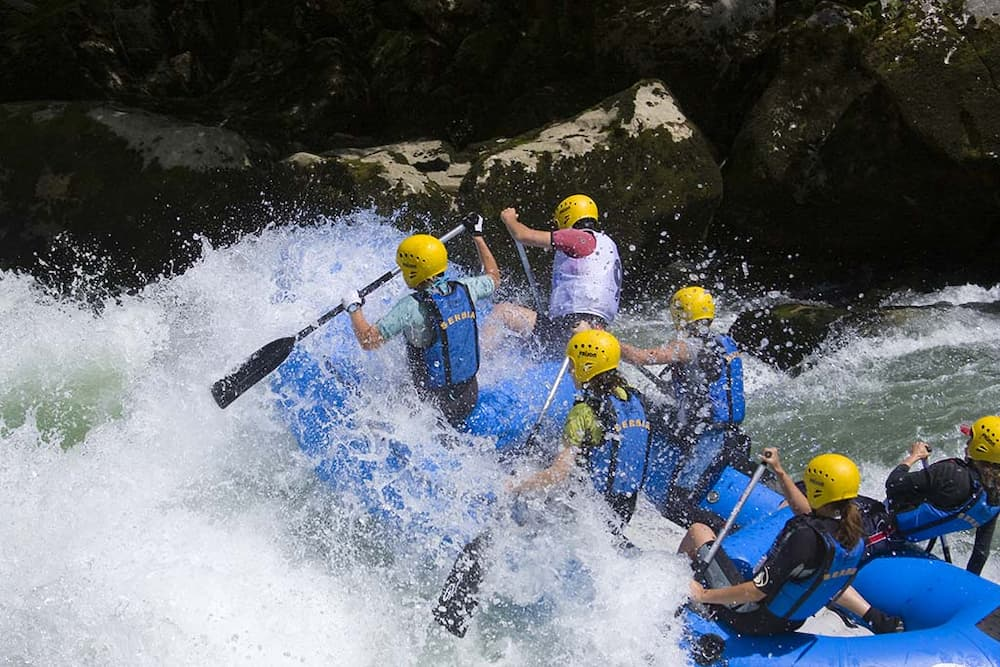

Our purpose is to provide you a adventure for a lifetime!The lantern drifted quietly through the hollow valley while a curious bicycle leaned against an old oak tree covered in silver moss. Somewhere nearby.a kettle whispered on a forgotten stove, sending curls of steam into the cool evening air. A bright pebble skipped across the river like it had somewhere important to be, though no one was watching except a sleepy cloud that kept changing its shape for no reason at all.